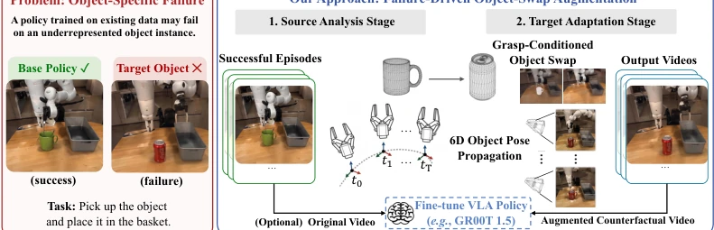
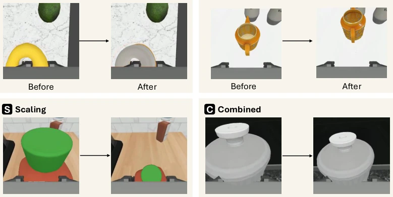
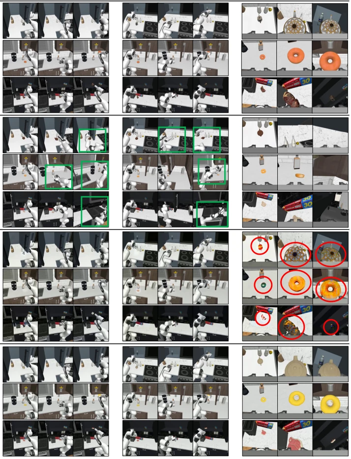

This paper implements a "head transplant" for VLA models. The core idea is straightforward: since the robot successfully grasps an object, replace it with one it cannot grasp, while keeping the action trajectory unchanged. This saves the cost of re-collecting data, but the trade-off is reliance on 3D reconstruction and pose estimation. Although claiming physical reasonableness, if the target object is too large or oddly shaped, forcing the old trajectory will still cause clipping. The 16.5% improvement is indeed attractive, but do not expect it to solve all long-tail problems, as it is still built on the premise of "source data success". For pipelines relying on external perception models (such as SAM3D), robustness is a concern; once the reconstructed mesh is misaligned, subsequent rendering fails entirely. Additionally, it cannot handle object interaction patterns that do not exist in the source data, essentially still "old wine in new bottles", but it is indeed superior to pure 2D editing in terms of multi-view consistency.
VLA strategies often fail when generalizing to new objects due to insufficient training distribution coverage. The traditional remedy is re-collecting multi-view teleoperation data, but this is too expensive and slow [11]. Existing data augmentation methods have respective flaws: VACE [16] based on 2D video editing lacks 3D awareness, leading to multi-view inconsistency, causing VLA models to receive conflicting signals during training; MimicGen [14] based on simulation is physically reasonable, but requires manual subtask segmentation, and often fails to find feasible trajectories for complex geometric objects, resulting in low coverage. Therefore, there is an urgent need for a method that can ensure physical reasonableness and generate multi-view consistent data at low cost to solve the OOD object generalization bottleneck. Pose6DAug attempts to fill this gap, inferring failure scenarios from successful trajectories.

Figure 1: Failure-driven object-swap augmentation. (a) Object-specific failure where a base policy fails to rollout plausible actions on an episode with novel object instances. (b) Given such failed episodes, we aim to synthesize successful rollout examples for their object instances (target objects
方法Method
方法分为三阶段。首先是目标网格重建与 6D 位姿提取，利用 SAM3D [21] 从单图重建目标 mesh，并从源数据获取 6D 位姿轨迹。其次是物体增强，对 mesh 进行旋转、平移和缩放扰动，增加多样性。最后是 3D 网格 - 位姿引导的视频合成，这是核心创新：先用 inpainting 修复背景，再根据共享的世界帧位姿渲染目标 mesh，最后合成。这种方法避免了逐帧 2D 编辑，确保所有视角看到的是同一个 3D 物体在同一时刻的投影，从而保证几何一致性。采用 back-to-front compositing 确保遮挡关系正确，例如手指在物体前方。显式 3D 表示锚定物体，避免了视图独立编辑带来的不一致。扰动包括沿抓取轴的平移和缩放，确保替换后仍可抓取。
The method is divided into three stages. First is target mesh reconstruction and 6D pose extraction, using SAM3D [21] to reconstruct the target mesh from a single image, and obtaining 6D pose trajectories from source data. Second is object augmentation, applying rotation, translation, and scale perturbations to the mesh to increase diversity. Finally is 3D mesh-pose guided video synthesis, which is the core innovation: first inpaint to repair the background, then render the target mesh based on the shared world frame pose, and finally composite. This method avoids per-frame 2D editing, ensuring all views see the projection of the same 3D object at the same moment, thereby ensuring geometric consistency. Back-to-front compositing is adopted to ensure correct occlusion relationships, such as fingers in front of the object. Explicit 3D representation anchors the object, avoiding inconsistencies brought by view-independent editing. Perturbations include translation and scaling along the grasp axis, ensuring graspability after replacement.

Figure 2: Data augmentation details. We apply combinations of geometric perturbations to the swapped target mesh, each shown as a before →after pair. (Top left) Rotation: the target mesh is randomly rotated or flipped to expose the policy to diverse plausible orientations. (Top right) Trans- lation:
Tested on the Counter-to-Cabinet task of RoboCasa365 [22]. Compared with baselines MimicGen [14] and VACE [16]. Metrics include Success Rate (Success Rate) and Turnover Ratio (Turnover Ratio). Results show Pose6DAug achieves a relative improvement of 16.5% on OOD objects, and can recover more originally failed object instances (Turnover Ratio 24.5% vs 18.2%). Qualitative analysis (Fig 3) shows VACE has multi-view inconsistency issues, while Pose6DAug maintains object identity and geometric consistency. Ablation studies indicate geometric perturbation is crucial for improving generalization. In hard sample experiments, training with only augmented data also achieves a 21.2% success rate, proving high data quality.

Figure 3: Qualitative comparisons. We compare the baselines [14, 16] and our Pose6DAug across left (exocentric), right (exocentric), and wrist (egocentric) camera views. Red circles highlight multi- view inconsistencies of the augmented object, and green rectangles indicate the physical implausibili